聯立三元一次方程(高斯消去法)
更新日期: 2012年3月29日
程式利用高斯消去法(Gaussian Elimination)，計算及簡化方程式組所代表的3×4增廣矩陣(3×4 augmented matrix)，透過這個矩陣可直接得出聯立三元一次方程的唯一解，或很容易決斷無解或求得無限解的通解。
簡化增廣矩陣為:
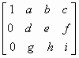
程式會計算出a, b, c, d, e, f, g, h及i的值。
程式需要在 REG Quad 模式下執行，因此在輸入程式前請先按 Mode Mode 2 → 3 進入REG Quad模式。
注意: 藍色的英文字為統計模式中的變數(Σx3 按 Shift 1 → → 1，Σy 按 Shift 1 → 2)，而3√是按shift x3。
程式(259 bytes)
Stat clear: ?→M: ?→X: ?→Y: 3√X┘M , Y÷M DT:
?→A: A┘M→A: ?→M: ?→X: ?→Y: ?→D: X - MΣx3→B:
Y - MΣy→C: D - MA→D: ?→M: ?→X: ?→Y: X - MΣx3→X:
Y - MΣy→Y: M: ?→M: M - AnsA→M: B => Goto 0:
X→B: C + Y→C: D + M→D: Lbl 0: B => Goto 1:
Σx3◢ Y=0 => M + D→M: Y=0 => C→Y: Goto 2:
Lbl 1: C┘B→C: D┘B→D: 1→B: Y - XC→Y: M - XD→M: 0◢
Lbl 2: Y=0 => Goto 3: M┘Y→M: 1→Y: D - CM→D: 0→C:
Lbl 3: AnsΣy - Σx3CB◢ A - Σx3DB - ΣyMY◢ B◢ C◢
D◢ 0◢ Y◢ M
例題1: 化簡下列方程組的增廣矩陣及因此解方程
按 Prog 1 再按 1 EXE 1 EXE 1 EXE 6 EXE 1 EXE -1 EXE 2 EXE 5 EXE
1 EXE 3 EXE 1 EXE 10 EXE (顯示0) EXE (顯示0) EXE (顯示1)
EXE (顯示1) EXE (顯示0) EXE (顯示2)
EXE (顯示0) EXE (顯示1) EXE (顯示3)
即化簡增廣矩陣為:
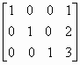
等價方程組為:
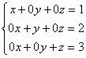
所以方程式的解為 x=1, y=2 及 z=3
例題2: 化簡下列方程組的增廣矩陣及因此解方程
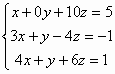
按 Prog 1 再按 1 EXE 0 EXE 10 EXE 5 EXE 3 EXE 1 EXE - 4 EXE -1 EXE
4 EXE 1 EXE 6 EXE 1 EXE (顯示0) EXE (顯示10) EXE (顯示5)
EXE (顯示1) EXE (顯示 - 34) EXE (顯示 -16)
EXE (顯示0) EXE (顯示0) EXE (顯示 -3)
即化簡增廣矩陣為:
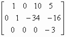
等價方程組為:
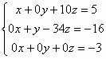
由於 0= - 3表示方程組出現矛盾，所以方程組無解。
例題3: 化簡下列方程組的增廣矩陣及因此解方程
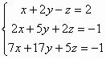
按 Prog 1 再按 1 EXE 2 EXE - 1 EXE 2 EXE 2 EXE 5 EXE 2 EXE -1 EXE
7 EXE 17 EXE 5 EXE - 1 EXE (顯示0) EXE (顯示 -9) EXE (顯示12)
EXE (顯示1) EXE (顯示 4) EXE (顯示 - 5)
EXE (顯示0) EXE (顯示0) EXE (顯示 0)
即化簡增廣矩陣為:
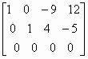
等價方程組為:
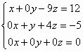
令 z=t，得通解為 x = 12 + 9t, y= - 5 - 4t 及 z = t (無限多組解)
例題4: 化簡下列方程組的增廣矩陣及因此解方程(以k表示)
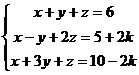
因常數項包含一個一次未知代數項，可以分兩次執行程式(沒有k及有k常數)求出答案，再將答案整合即可。方程可寫為:
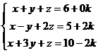
先計算沒有k常數
按 Prog 1 再按 1 EXE 1 EXE 1 EXE 6 EXE 1 EXE -1 EXE 2 EXE 5 EXE
1 EXE 3 EXE 1 EXE 10 EXE (顯示0) EXE (顯示0) EXE (顯示1)
EXE (顯示1) EXE (顯示0) EXE (顯示2)
EXE (顯示0) EXE (顯示1) EXE (顯示3)
再計算有k常數
按 Prog 1 再按 1 EXE 1 EXE 1 EXE 0 EXE 1 EXE -1 EXE 2 EXE 2 EXE
1 EXE 3 EXE 1 EXE - 2 EXE (顯示0) EXE (顯示0) EXE (顯示1，亦即是 k )
EXE (顯示1) EXE (顯示0) EXE (顯示-1，亦即是 - k )
EXE (顯示0) EXE (顯示1) EXE (顯示0，亦即是 0k )
即化簡增廣矩陣為:
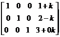
所以方程解為 x = 1 + k, y = 2 - k, z = 3
註1: 程式限制為第一個輸入數值不能等於0，否則會出現Math ERROR。
註2: 第二及第三個數值不可以直接輸入分數，否則可能出現MATH ERROR，若要輸入分數，請用除號代替分號，若果需要直接輸入分數，請使用網頁尾附錄的SD模式版本程式。
註3: 例題4分兩次輸入的方法只適用於未知代數出現在常數項(最後的欄內)，若未知代數只出現在其它的欄內(例如: z係數的欄)，方法未必適用，但依然可以將包含未知代數的欄調到取後變成最後的欄，以例題4的方法輸入化簡矩陣，但所求得的矩陣未必是完整解答。
舊版程式
程式編寫日期: 2008年7月16日
程式利用高斯消去法(Gaussian Elimination)，計算及簡化方程式組所代表的3×4增廣矩陣(3×4 augmented matrix)，透過這個矩陣可直接得出聯立三元一次方程的唯一解，或很容易決斷無解或求得無限解的通解。
簡化增廣矩陣為:
程式會計算出a, b, c, d, e, f, g, h及i的值。
程式需要在 REG Quad 模式下執行，因此在輸入程式前請先按 Mode Mode 2 → 3 進入REG Quad模式。
注意: 藍色的英文字為統計模式中的變數(Σx3 按 Shift 1 → → 1，Σy 按 Shift 1 → 2)，而3√是按shift x3。
程式(264 bytes)
Stat clear: ?→M: ?→X: ?→Y: 3√X┘M , Y÷M DT:
?→A: A┘M→A: ?→M: ?→X: ?→Y: ?→D: X - MΣx3→B:
Y - MΣy→C: D - MA→D: ?→M: ?→X: ?→Y: X - MΣx3→X:
Y - MΣy→Y: M: ?→M: M - AnsA→M: B => Goto 0:
X→B: C + Y→C: D + M→D: Lbl 0: B=0 => Goto 1:
C┘B→C: D┘B→D: 1→B: Y - XC→Y: M - XD→M: 0→X◢
Lbl 1: Ans => Σx3◢ Y2 + B2 => Goto 2: C→Y: M + D→M:
Lbl 2: Y=0 => Goto 3: M┘Y→M: 1→Y:D - CM→D: 0→C◢
Lbl 3: Ans => Σy - Σx3CB◢ A - Σx3DB - ΣyMY◢ B◢ C◢
D◢ X◢ Y◢ M
附錄程式 ( 267 bytes，可直接輸入分數係數)
程式需要在 SD 模式下執行，因此在輸入程式前請先按 Mode Mode 1 進入SD模式。
注意 : 藍色的英文字為統計模式中的變數(Σx 按 shift 1 2 ，n shift 1 3)
Stat clear: ?→M: ?→X: ?→Y: ; Y÷M - 1 DT: X÷M DT:
?→A: A┘M→A: ?→M: ?→X: ?→Y: ?→D: X - MΣx→B:
Y - Mn→C: D - MA→D: ?→M: ?→X: ?→Y: X - MΣx→X:
Y - Mn→Y: M: ?→M: M - AnsA→M: B => Goto 0:
X→B: C + Y→C: D + M→D: Lbl 0: B=0 => Goto 1:
C┘B→C: D┘B→D: 1→B: Y - XC→Y: M - XD→M: 0→X◢
Lbl 1: Ans => Σx◢ Y2 + B2 => Goto 2: C→Y: M + D→M:
Lbl 2: Y=0 => Goto 3: M┘Y→M: 1→Y: D - CM→D: 0→C◢
Lbl 3: Ans => n - ΣxCB◢ A - ΣxDB - nMY◢ B◢ C◢ D◢
X◢ Y◢ M